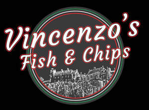

Trade Mark Journal No.2026/005 30 January 2026
UK00004325553 16 January 2026 (29)

- Class 29
- Fish with chips; Vegetable chips; Fish sausages; Fish crackers; Fish fillets; Fillets (Fish -); Fruit chips; Chips (Fruit -); Fish croquettes; Fish products being frozen; Steaks of fish; Fish steaks; Fish sticks; Food products made from fish; Fish (Food products made from -); Frozen chips; Potato chips; Chips (Potato -); Coconut chips; Dishes of fish; Fish steak; Tuna fish; Apple chips; Soya chips; Banana chips; Fish meat floss; Smoked fish; Kale chips; Vegetable-based chips; Dried fish meat; Soy chips; Yucca chips; Cassava chips; Dried fish; Frozen fish; Salted fish; Fish (Salted -); Fish balls; Grilled fish fillets; Fish jellies; Yuca chips; Cooked fish; Processed fish; Fish floss; Pickled fish; Tinned fish; Fish, tinned; Fish fingers; Fish paste; Flakes of dried fish meat (kezuri-bushi); Fish, seafood and molluscs spreads; Bottled fish; Low-fat potato chips; Chips [french fries]; Tuna fish [not live]; Tuna fish, not live; Mousses (Fish -); Fish mousses; Fish maw; Tuna fish [preserved]; Fish, seafood and molluscs, not live; Foods prepared from fish; Fish preserves; Veggie burger patties; Burgers; Turkey burger patties; Tofu burger patties; Soy burger patties; Meat burgers; Chicken burgers; Turkey burgers; Vegetable burgers; Hamburgers; Uncooked hamburger patties; Waffle fries; Hotdog sausages; Meat products being in the form of burgers; Potato fries; Grilled chicken (Yakitori); Galbi [grilled meat dish]; Beef steaks; Tofu patties; Chicken salad; Falafel; Bulgogi [Korean beef dish]; Pork steaks; Beef meatballs; Steaks of meat; Pastrami; Milkshakes; Bulgogi; Teriyaki chicken; Sausage meat; Chicken sausages; Bacon; Grilled pork belly (samgyeopsal); Coleslaw; Fried meat; Sliced and seasoned barbequed beef (bulgogi); Chicken croquettes; Chicken meatballs; Bratwurst; Vegetarian sausages; Soya patties; Corned beef hash; French fries; Beef; Crab meat; Pie fillings of meat; Pieces of chicken for use as a filling in sandwiches; Potato salad; Roast beef; Frozen french fries; Beef slices; Pepperoni; Fried chicken; Chicken mousse; Tofu-based snack food; Breaded and fried jalapeno peppers; Chicken pate; Beef stew.
Vincenzo Di Carlo